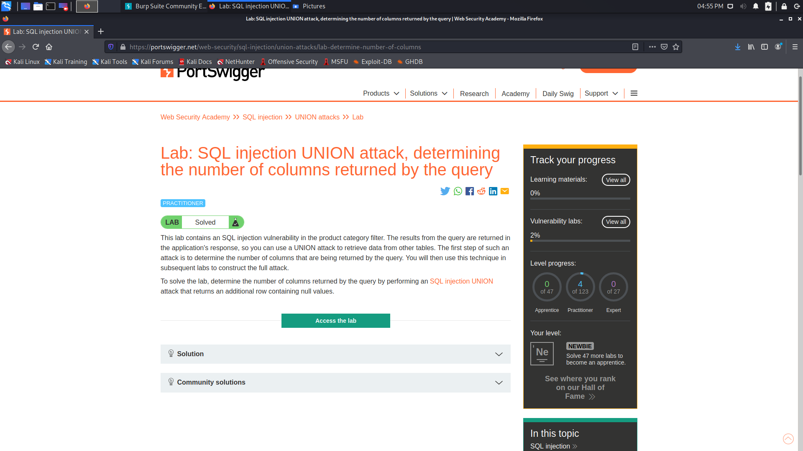
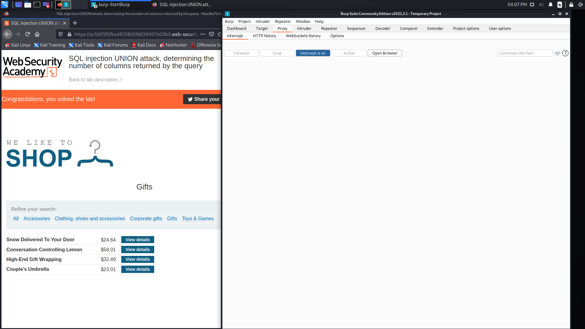
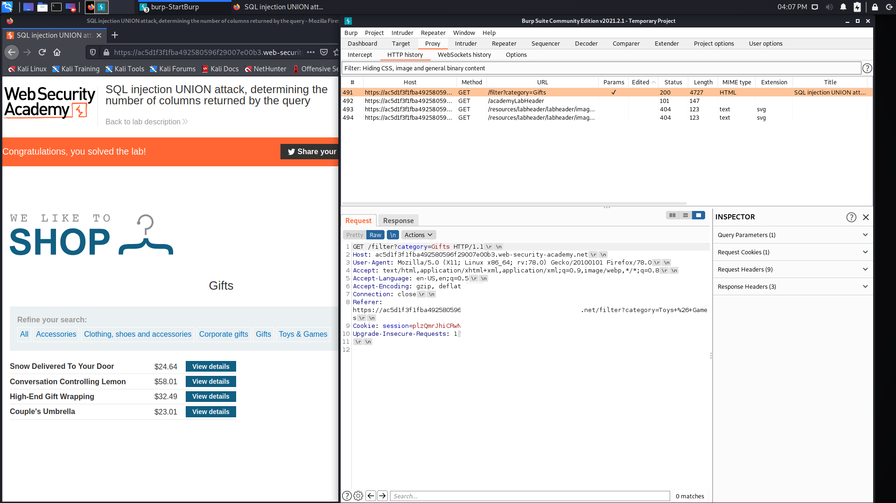

PostSwigger’in hazırlamış olduğu lab çözümlerine bu yazım ile başlayacağız. İlk olarak SQL injection grubuna ait Lab: SQL injection UNION attack, determining the number of columns returned by the query adlı labı çözeceğiz. Bunu çözmek için olmazsa olmaz burp suite aracından yararlanacağız.
İlk olarak burp suite’i intercept is off moduna alıyoruz. Aldıktan sonra Access the lab sekmesine tıklayarak makineye bağlanıyoruz.
Bağlandıktan sonra Intercept is on sekmesine tıklayarak dinleme işlemini başlatıyoruz.

Intercept’i on ettikten sonra bağlandığımız labdan herhangi bir kategoriye tıklıyoruz. Ben bu yazımda Gifts kategorisinden devam edeceğim. Kategorilerden birine tıkladıktan sonra burp suite’de sekmelerde olan Proxy’ girip http history’e tıklıyoruz. Tıkladıktan sonra category=Gifts yazısının üstüne tıklayarak request ve response sekmesini açıyoruz. Request bölümünde sağ tık yaparak send to repeater sekmesine tıklıyoruz.

Repeater sekmesine geldikten sonra Request bölümünde lab açıklamasındaki bizden isteneni yapabilmek için Gifts’in yanına ‘+UNION+SELECT+NULL,NULL,NULL--kod parçasını yazıyoruz. Yazdıktan sonra Send sekmesine tıklıyoruz. Bunu da yaptıktan sonra Intercept’i tekrar off yapıyoruz ve karşımıza Congratulations, you solved the lab! yazısı gelmektedir.

İlk labı bu sayede çözmüş bulunmaktayız. Başka bir yazıda görüşmek üzere.